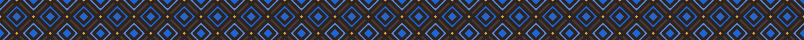

 Bənövşə — ulduz8, sıxlıq 5, #6B3F9E
Bənövşə — ulduz8, sıxlıq 5, #6B3F9E Lacivərd — carpaz, sıxlıq 6, #1B4FA0
Lacivərd — carpaz, sıxlıq 6, #1B4FA0 Kəhrəba — altibucaq, sıxlıq 5, #9A5C05
Kəhrəba — altibucaq, sıxlıq 5, #9A5C05 Firuzə — ulduz8, sıxlıq 7, #0E7186
Firuzə — ulduz8, sıxlıq 7, #0E7186 Zeytun — carpaz, sıxlıq 8, #5C7A15
Zeytun — carpaz, sıxlıq 8, #5C7A15 Yaqut — sekkizguse, sıxlıq 6, #B0243C
Yaqut — sekkizguse, sıxlıq 6, #B0243C Zümrüd — altibucaq, sıxlıq 6, #1D7A5A
Zümrüd — altibucaq, sıxlıq 6, #1D7A5A Gülabı — sekkizguse, sıxlıq 8, #A83A6E
Gülabı — sekkizguse, sıxlıq 8, #A83A6E